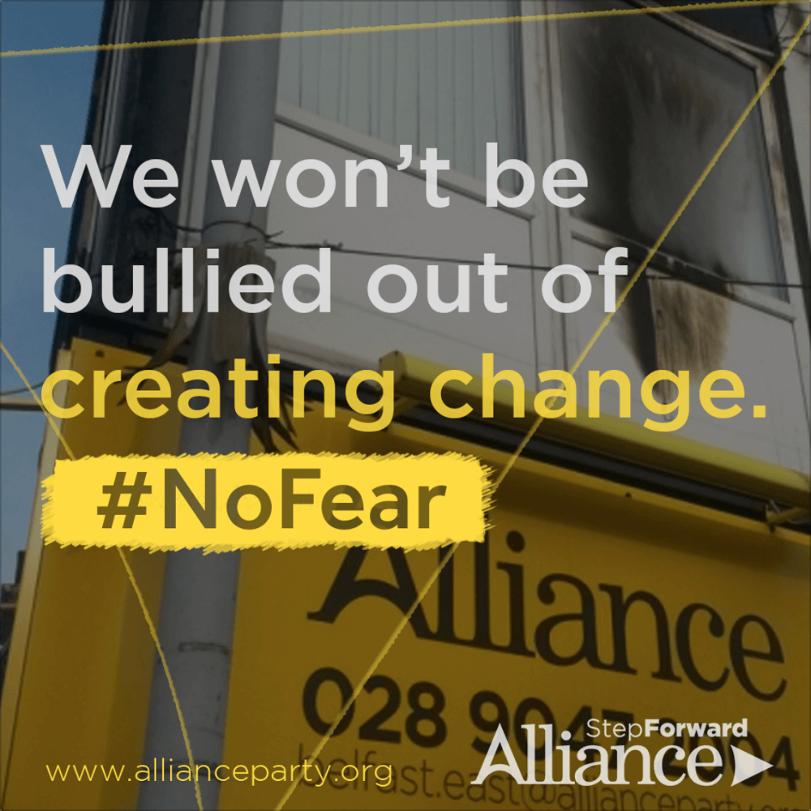
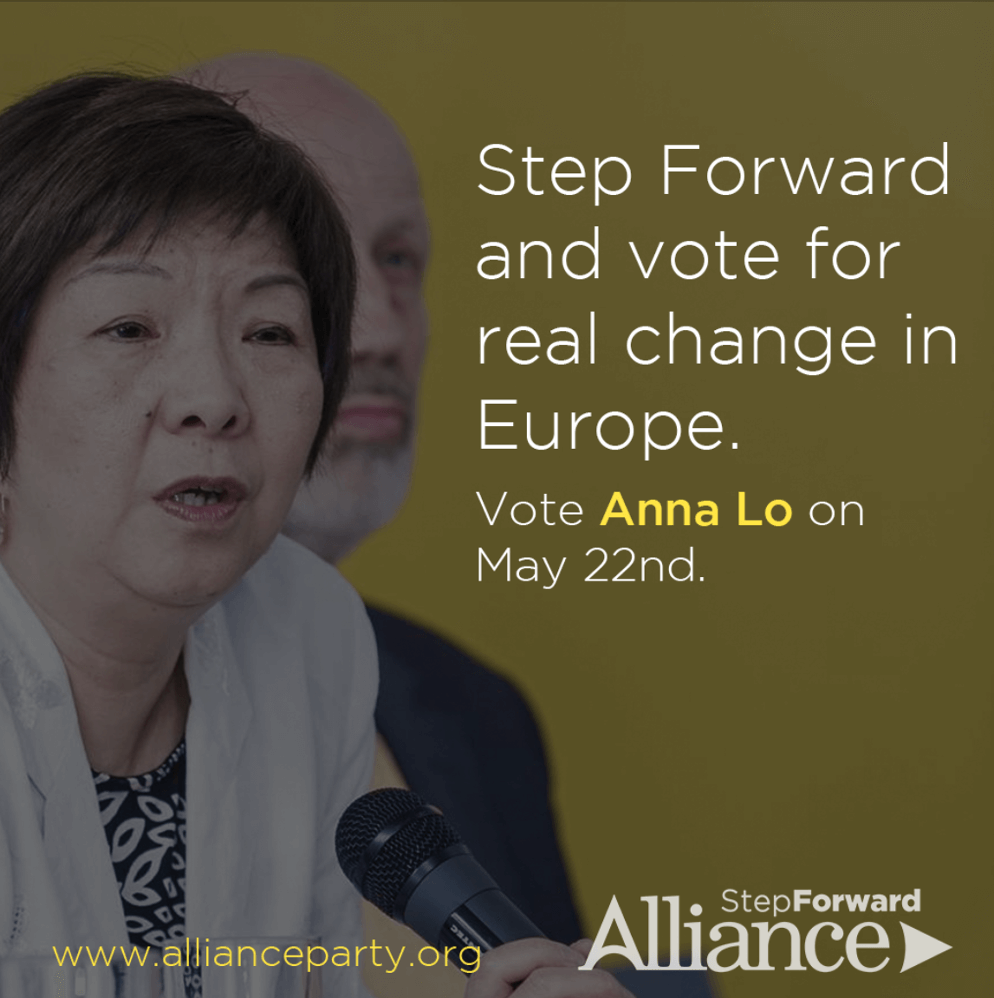
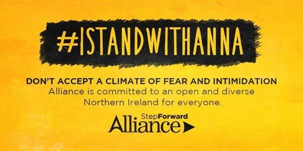
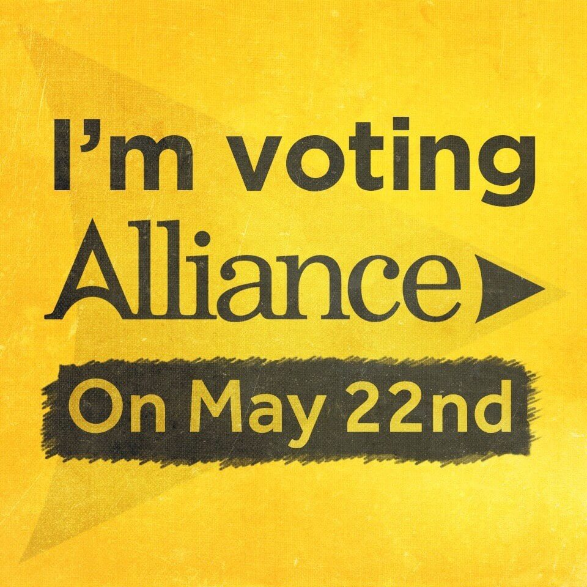

Visual identity - Rowan Gibney, the then chair of Alliance Youth, requested that I work on a rebrand to bring the young wing of the Alliance Party more in-line with the current party branding due to the previous logo being extremely outdated. Branding work was also completed for Alliance LGBT.
Visual identity - Rowan Gibney, the then chair of Alliance Youth, requested that I work on a rebrand to bring the young wing of the Alliance Party more in-line with the current party branding due to the previous logo being extremely outdated. Branding work was also completed for Alliance LGBT.

Social Media Graphic - A graphic I designed for Alliance after the April 2014 firebomb attacks on the East Belfast Constituency Office.

Social Media Graphic - Social media graphic to share in the run up to Anna Lo's run in the EU Elections.

Social Media Banner - #IStandWithAnna graphic - This image went viral on social media in support of Anna Lo, and was used at several rallies in Belfast against racism and featured in several news outlets.

Profile Photo - Twibbon style profile photo that Alliance supporters used in the run up to the election.